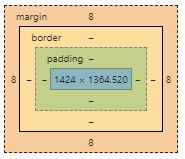

Margins are set up in the CSS of a page and are gaps you can put around elements. Margins are measured in px, pt, cm, and more. They do surround an element so each side can have different sized margins.
Margins do separate elements on a page, this is usually to make it more presentable i.e so things are not jammed up together. They can be applied to any element trough a class, id or style in the same line.
Borders in CSS are just like borders everywhere, they are there for a look. There are different types of boarders i.e solid, dotted, dashed, etc... . They can also have different colors, thickness, and roundness of the corners.
Borders are used to make something look contained and easier to look at. It can also be used to separate two elements if they are too close together and make things look more presentable.
Padding is useful for spacing out your webpage more. You can make slight changes with it but there are not as many changes to it in the CSS as you can with other things. The only one I use is the length but there is also %, initial and inherit.
Padding does make space between the content and the border and is used when the border is touching the content or it does look bad with it close together.
They are all parts of the CSS code which stands for Cascading Style Sheets. It is the part of the code for making stuff look pretty. I find the w3schools pages on Margins, Padding, and Borders really helpful.